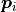
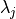
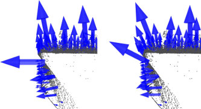

Estimating Surface Normals in a PointCloud
Surface normals are important properties of a geometric surface, and are heavily used in many areas such as computer graphics applications, to apply the correct light sources that generate shadings and other visual effects.
Given a geometric surface, it’s usually trivial to infer the direction of the normal at a certain point on the surface as the vector perpendicular to the surface at that point. However, since the point cloud datasets that we acquire represent a set of point samples on the real surface, there are two possibilities:
obtain the underlying surface from the acquired point cloud dataset, using surface meshing techniques, and then compute the surface normals from the mesh;
use approximations to infer the surface normals from the point cloud dataset directly.
This tutorial will address the latter, that is, given a point cloud dataset, directly compute the surface normals at each point in the cloud.
Theoretical primer
Though many different normal estimation methods exist, the one that we will concentrate on this tutorial is one of the simplest, and is formulated as follows. The problem of determining the normal to a point on the surface is approximated by the problem of estimating the normal of a plane tangent to the surface, which in turn becomes a least-square plane fitting estimation problem.
Note
For more information, including the mathematical equations of the least-squares problem, see [RusuDissertation].
The solution for estimating the surface normal is therefore reduced to an analysis of the eigenvectors and eigenvalues (or PCA – Principal Component Analysis) of a covariance matrix created from the nearest neighbors of the query point. More specifically, for each point , we assemble the covariance matrix as follows:

Where is the number of point neighbors considered in the
neighborhood of ,
represents the 3D centroid of the nearest neighbors,  is the
 -th eigenvalue of the covariance matrix, and
-th eigenvalue of the covariance matrix, and  the -th eigenvector.
the -th eigenvector.
To estimate a covariance matrix from a set of points in PCL, you can use:
1 2 3 4 5 6 7 8 9 10 | // Placeholder for the 3x3 covariance matrix at each surface patch
Eigen::Matrix3f covariance_matrix;
// 16-bytes aligned placeholder for the XYZ centroid of a surface patch
Eigen::Vector4f xyz_centroid;
// Estimate the XYZ centroid
compute3DCentroid (cloud, xyz_centroid);
// Compute the 3x3 covariance matrix
computeCovarianceMatrix (cloud, xyz_centroid, covariance_matrix);
|
In general, because there is no mathematical way to solve for the sign of the normal, its orientation computed via Principal Component Analysis (PCA) as shown above is ambiguous, and not consistently oriented over an entire point cloud dataset. The figure below presents these effects on two sections of a larger dataset representing a part of a kitchen environment. The right part of the figure presents the Extended Gaussian Image (EGI), also known as the normal sphere, which describes the orientation of all normals from the point cloud. Since the datasets are 2.5D and have thus been acquired from a single viewpoint, normals should be present only on half of the sphere in the EGI. However, due to the orientation inconsistency, they are spread across the entire sphere.
{kind=link}
{kind=link}
{kind=link}
The solution to this problem is trivial if the viewpoint is in fact known. To orient all normals consistently towards the viewpoint, they need to satisfy the equation:
The figure below presents the results after all normals in the datasets from the above figure have been consistently oriented towards the viewpoint.
{kind=link}
{kind=link}
{kind=link}
To re-orient a given point normal manually in PCL, you can use:
flipNormalTowardsViewpoint (const PointT &point, float vp_x, float vp_y, float vp_z, Eigen::Vector4f &normal);
Note
If the dataset has multiple acquisition viewpoints, then the above normal re-orientation method does not hold, and more complex algorithms need to be implemented. Please see [RusuDissertation] for more information.
Selecting the right scale
As previously explained, a surface normal at a point needs to be estimated from the surrounding point neighborhood support of the point (also called k-neighborhood).
The specifics of the nearest-neighbor estimation problem raise the question of the right scale factor: given a sampled point cloud dataset, what are the correct k (given via pcl::Feature::setKSearch) or r (given via pcl::Feature::setRadiusSearch) values that should be used in determining the set of nearest neighbors of a point?
This issue is of extreme importance and constitutes a limiting factor in the automatic estimation (i.e., without user given thresholds) of a point feature representation. To better illustrate this issue, the figure below presents the effects of selecting a smaller scale (i.e., small r or k) versus a larger scale (i.e., large r or k). The left part of the figures depicts a reasonable well-chosen scale factor, with estimated surface normals approximately perpendicular for the two planar surfaces and small edges visible all across the table. If the scale factor however is too big (right part), and thus the set of neighbors is larger covering points from adjacent surfaces, the estimated point feature representations get distorted, with rotated surface normals at the edges of the two planar surfaces, and smeared edges and suppressed fine details.
{kind=link}

Without going into too many details, it suffices to assume that for now, the scale for the determination of a point’s neighborhood has to be selected based on the level of detail required by the application. Simply put, if the curvature at the edge between the handle of a mug and the cylindrical part is important, the scale factor needs to be small enough to capture those details, and large otherwise.
Estimating the normals
Though an example of normal estimation has already been given in Features, we will revise one of them here for the purpose of better explaining what goes on behind the scenes.
The following code snippet will estimate a set of surface normals for all the points in the input dataset.
1 2 3 4 5 6 7 8 9 10 11 12 13 14 15 16 17 18 19 20 21 22 23 24 25 26 27 28 | #include <pcl/point_types.h>
#include <pcl/features/normal_3d.h>
{
pcl::PointCloud<pcl::PointXYZ>::Ptr cloud (new pcl::PointCloud<pcl::PointXYZ>);
... read, pass in or create a point cloud ...
// Create the normal estimation class, and pass the input dataset to it
pcl::NormalEstimation<pcl::PointXYZ, pcl::Normal> ne;
ne.setInputCloud (cloud);
// Create an empty kdtree representation, and pass it to the normal estimation object.
// Its content will be filled inside the object, based on the given input dataset (as no other search surface is given).
pcl::search::KdTree<pcl::PointXYZ>::Ptr tree (new pcl::search::KdTree<pcl::PointXYZ> ());
ne.setSearchMethod (tree);
// Output datasets
pcl::PointCloud<pcl::Normal>::Ptr cloud_normals (new pcl::PointCloud<pcl::Normal>);
// Use all neighbors in a sphere of radius 3cm
ne.setRadiusSearch (0.03);
// Compute the features
ne.compute (*cloud_normals);
// cloud_normals->points.size () should have the same size as the input cloud->points.size ()*
}
|
The actual compute call from the NormalEstimation class does nothing internally but:
for each point p in cloud P
1. get the nearest neighbors of p
2. compute the surface normal n of p
3. check if n is consistently oriented towards the viewpoint and flip otherwise
The viewpoint is by default (0,0,0) and can be changed with:
setViewPoint (float vpx, float vpy, float vpz);
To compute a single point normal, use:
computePointNormal (const pcl::PointCloud<PointInT> &cloud, const std::vector<int> &indices, Eigen::Vector4f &plane_parameters, float &curvature);
Where cloud is the input point cloud that contains the points, indices represents the set of k-nearest neighbors from cloud, and plane_parameters and curvature represent the output of the normal estimation, with plane_parameters holding the normal (nx, ny, nz) on the first 3 coordinates, and the fourth coordinate is D = nc . p_plane (centroid here) + p. The output surface curvature is estimated as a relationship between the eigenvalues of the covariance matrix (as presented above), as:
Speeding Normal Estimation with OpenMP
For the speed-savvy users, PCL provides an additional implementation of surface normal estimation which uses multi-core/multi-threaded paradigms using OpenMP to speed the computation. The name of the class is pcl::NormalEstimationOMP, and its API is 100% compatible to the single-threaded pcl::NormalEstimation, which makes it suitable as a drop-in replacement. On a system with 8 cores, you should get anything between 6-8 times faster computation times.
Note
If your dataset is organized (e.g., acquired using a TOF camera, stereo camera, etc – that is, it has a width and a height), for even faster results see the Normal Estimation Using Integral Images.